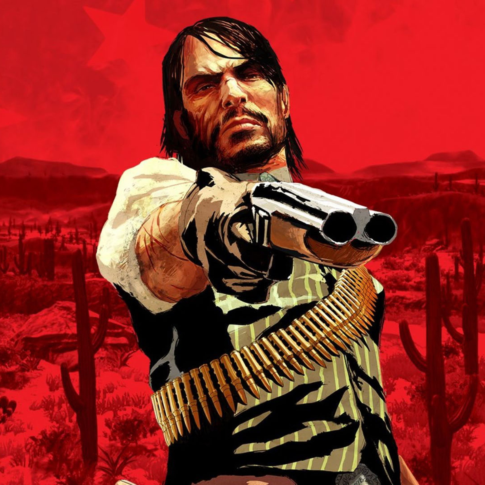
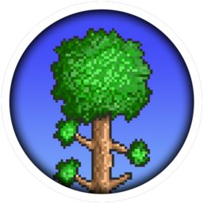
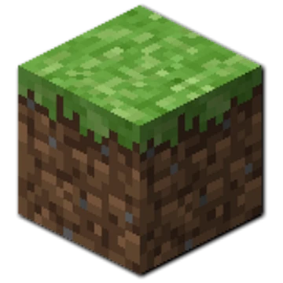
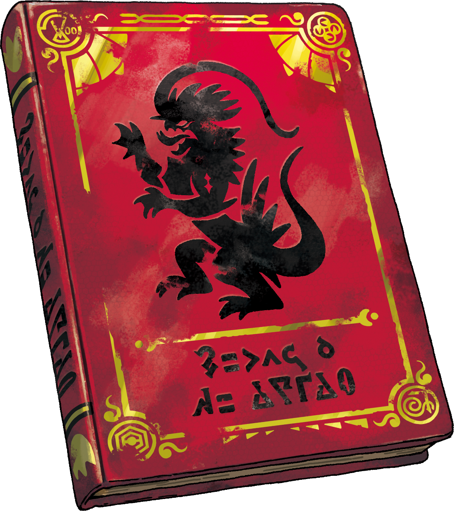
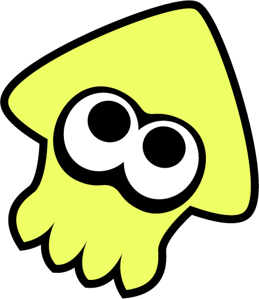
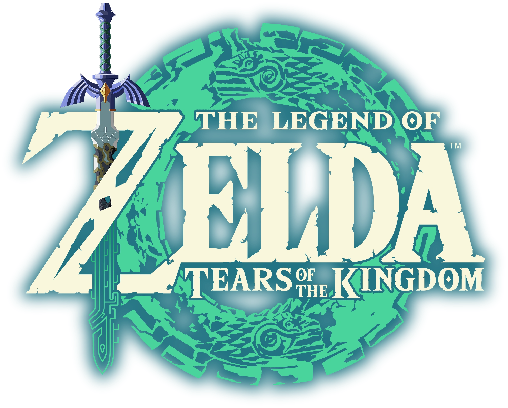
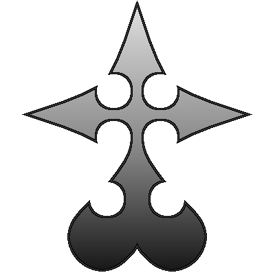
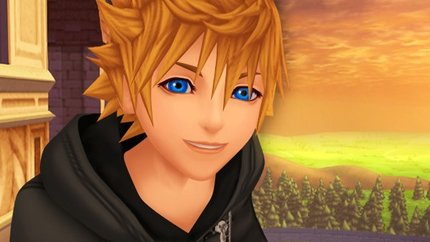

JoseKyogreEGG
Hola, soy Jose, y me gusta bastante programar y jugar a videojuegos, también me gusta mucho pasar tiempo con mis primitos y jugar con mis mascotas.
Recientemente he jugado los siguientes videojuegos:
- Red Dead Redemption 
- Project Zomboid
- Terraria
- Minecraft
- Pokemon Scarlet
- Splatoon 3
- The Legend of Zelda Tears of the Kingdom
- Project Nobody My Cry [MOD DE KINGDOM HEARTS 2]
